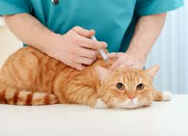
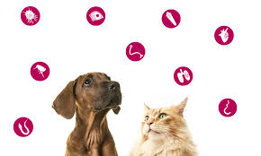
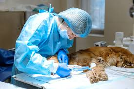

En la consulta veterinaria general se realiza un chequeo completo del estado de salud de la mascota. El veterinario evalúa signos vitales, comportamiento, condición física, y responde a las inquietudes del dueño. Es el primer paso para detectar enfermedades, planificar vacunas o tratamientos preventivos.
vacunacion

Las vacunas protegen a perros y gatos de enfermedades graves como la rabia, parvovirus, moquillo, entre otras. El veterinario establece un calendario de vacunación según la edad, el tipo de mascota y su estilo de vida. Este servicio es fundamental para garantizar la salud del animal y prevenir contagios.
Desparasitación

Tanto interna (lombrices) como externa (pulgas y garrapatas), la desparasitación es esencial para mantener a las mascotas sanas y libres de infecciones. Se recomienda realizarla periódicamente, y el veterinario prescribe el producto más adecuado según la especie, peso y edad del animal.
Cirugías

Las clínicas veterinarias ofrecen intervenciones quirúrgicas programadas o de emergencia. Entre las más comunes están la esterilización, la extracción de tumores, cirugías digestivas o traumatológicas. Estas se realizan con anestesia controlada y seguimiento postoperatorio.
Emergencias 24 horas
Algunos centros veterinarios cuentan con atención continua para casos de urgencia como accidentes, intoxicaciones, fiebre alta o dificultad para respirar. Este servicio permite actuar de manera inmediata ante situaciones críticas que pueden poner en riesgo la vida del animal.
Exámenes de laboratorio
Se realizan análisis de sangre, orina, heces u otros fluidos para diagnosticar enfermedades, infecciones o alteraciones internas. Los resultados permiten al veterinario establecer diagnósticos precisos y diseñar tratamientos efectivos.
Radiografías y ecografías
El diagnóstico por imágenes es clave para evaluar huesos, órganos internos, articulaciones y más. Las radiografías detectan fracturas o malformaciones, mientras que las ecografías permiten observar el estado de órganos como el hígado, el corazón o el útero (en caso de embarazos).